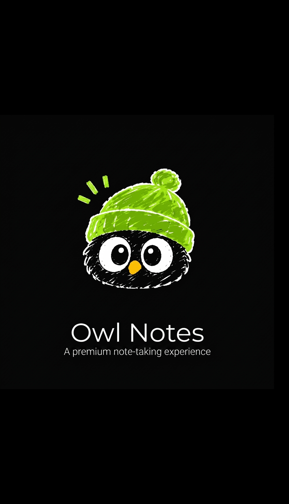
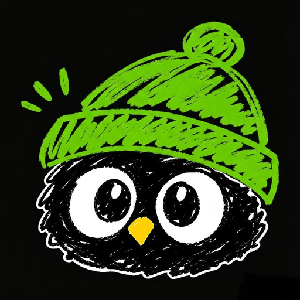
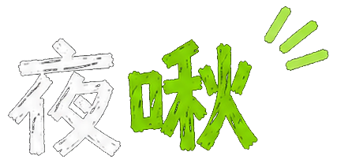
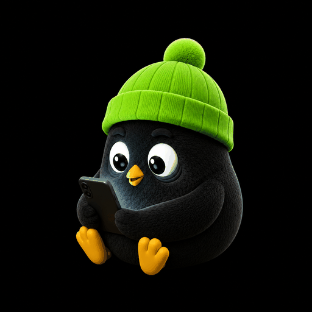
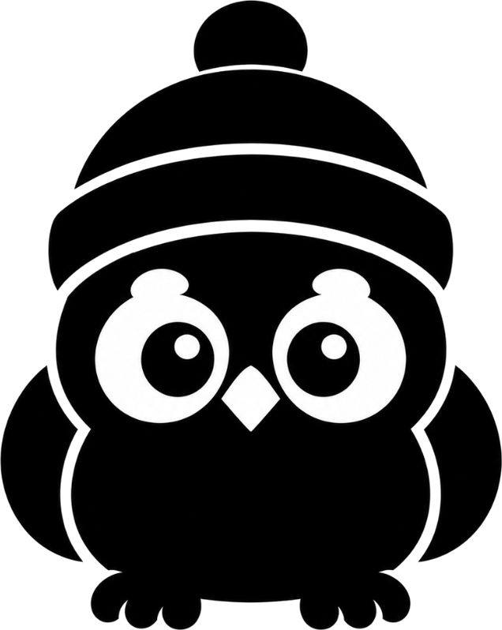
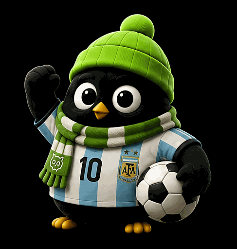

夜啾把世界杯赛程、观赛护航、赛后打卡和图鉴收录串在一起。首页负责看今天，护航负责排今晚，图鉴负责记住你这一届世界杯。
关注主队、收藏关键场次，首页会把本地时间、直播状态和提醒入口放在最前面。
把今晚的比赛排成能执行的路线。
记录全场、限时、补看或休息。
把当天状态变成一张可分享的夜啾卡。
用整届世界杯轨迹生成最终报告。
护航页不会改写已经确认过的记录，但会根据新的打卡、明日安排和真实状态，调整下一轮观赛路线。
不用纠结全不全，先把“有可能看”的比赛加进来。
告诉夜啾你今晚想多看一点、稳一点，还是明天很忙。
你实际看了什么，会影响下一轮建议和图鉴收录。
开球时间、连续场、重叠场和未来 36 小时窗口。
均衡、主队、护航、焦点战会影响先保哪类比赛。
起床约束、短休能力和明日强度会改变夜间预算。
睡了多久、精神如何、有无补觉会带回下一次排班。
页面还会把赛前准备、开球时怎么做、看完后怎么收束整理成“今晚执行路线”。
先判断哪场最值得实时投入：主队、焦点战、淘汰赛和你主动订阅的比赛权重更高。
再看前后场关系：是否连轴、是否重叠、看完还能不能睡回去、明天能不能短休。
如果赛后真实执行和建议不同，下一轮会按打卡重新排，不会强行沿用旧计划。
深夜开球、连续熬夜、重叠窗口和明日强度会提高压力；晚起、午休、休息日和真实状态好会回收一部分。它用来判断接下来怎么排，不代表真实睡眠质量。
夜啾只做观赛安排建议；如果已经头晕、胸闷、心悸或呼吸不适，请优先休息，必要时寻求专业帮助。
图鉴记录的是你的真实观赛状态：你看了哪场、怎么看的、这场和主队/焦点/作息有什么关系。它不做稀有度排名，而是把不同看球方式都变成夜啾的一张状态卡。
先在首页订阅比赛。图鉴只会围绕你真正关心、或已经打卡的比赛生成。
赛后确认真实状态。全场、限时、补看、休息都会生成不同类型的每日图鉴。
回看阶段和状态。小组赛、淘汰赛、主队线、夜班线会一起汇入终极人格。
全场、限时、补看、休息，是每日图鉴最核心的输入。
主队场次会提高情绪权重，代表比赛也会优先展示主队。
凌晨、淘汰赛、焦点战、比分剧情会影响图鉴方向。
赛前方案和赛后真实选择不同，会成为图鉴解释的一部分。
正面负责传播：夜啾形象、状态标题、金句和最关键的一场比赛。
详情负责解释：为什么是这张图鉴、关键证据是什么、下一步怎么收束。
列表负责回看：按阶段和状态筛选，帮你快速找回某一段世界杯记忆。
护航方案卡偏赛前：告诉你今晚怎么安排，适合分享“我准备怎么熬”。
每日图鉴卡偏赛后：记录你真实怎么度过这一晚，适合分享“我今天是什么状态”。
终极人格是整届世界杯的结算：不是一天的状态，而是 39 天轨迹沉淀出来的最终身份。
终极人格不会只看你熬了多少夜，也会看主队陪伴、取舍习惯、名场面浓度和恢复能力。每日图鉴是当天快照，终极人格是整届旅程的总画像。
有问题、建议或合作想法，可以通过下面方式联系我。
Select Owl Avatar
Data Sync & Backup
网页版与 App (APK) 版本的浏览器沙箱完全隔离。您可以通过下方的“数据同步码”来迁移或同步您的订阅、打卡、主队等本地记录。
生成您的专属数据同步码，复制后在其他浏览器或安装的 APK 中导入即可。
粘贴您在其他地方复制的同步码（一长串字符），覆盖当前本地数据。